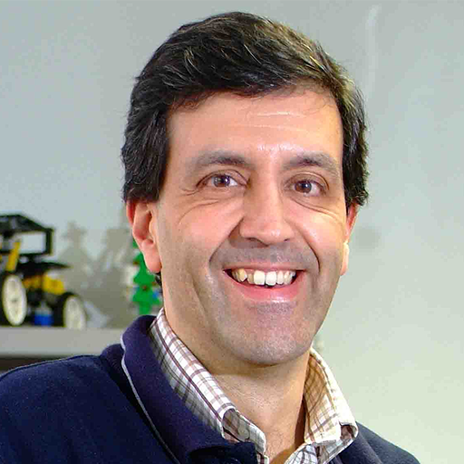

Aim
Fleets of heterogeneous robots, such as ground vehicles and aerial vehicles, are deployed to accomplish tasks that are otherwise too inefficient or even infeasible for a single robot. Not only the overall efficiency of the team can be significantly improved by allowing the robots to move and act; but also, the capabilities of the team can be greatly extended by enabling multiple robots to directly collaborate on a task. However, their task and motion coordination are often subject to various constraints, including geometric constraints from the workspace; dynamic constraints from the robot model; and temporal constraints from the task specifications. How to address these constraints in a safe, efficient and real-time way remains an active and challenging research area. This workspace aims to bring experts in related domain (from both control and robotics background) together to brain-storm about these topics.
Particularly, we are interested in the following questions:
- Task coordination
- What are the challenges for task coordination of multi-robot systems, e.g., combinatorial complexity, marginal payoff, and temporal ordering of tasks?
- How to estimate the cost of a sub-team performing a task during planning? 3. When and how to adapt within dynamic/adversarial environments?
- Motion coordination
- How to deal with geometric and dynamic constraints? 2. How to optimize over a sequence of parameterized controllers?
- What if the motion planning is computational costly?
- Task and motion coordination
1. How to ensure inter-robot communications?
- Should temporal constraints be handled at both levels?
- How to close the loop online, periodic or event-triggered?
- How could learning help?
Speakers
|  |

|
|
|
Petter Ögren
KTH, Sweden |
Pedro U. Lima
Universidade de Lisboa, Portugal |
Yulong Gao
Imperial College London, UK |
|
Leonel Rozo
Bosch center for AI; Universität Tübingen, Germany |
Christos Verginis
Uppsala University, Sweden |
Organizers

|
|
|
Meng Guo
Peking University, China |
Siyuan Liu KTH, Sweden |
Acknowledgements
This workshop is partially supported by the National Natural Science Foundation of China (NSFC) under grants 62203017, U2241214; the Fundamental Research Funds for the central universities.
Contact
Meng Guo, meng.guo@pku.edu.cn